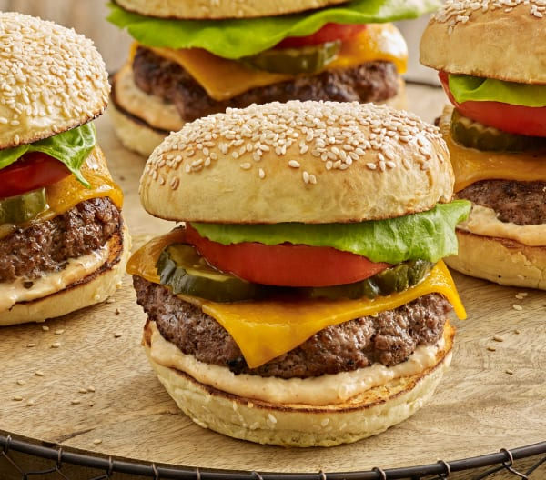

Hamburguesa clásica

Ingredientes
Para la carne
- 500g de carne molida
- Sal
- Pimienta
Para el montaje
- Pan de hamburguesa
- Lechuga
- Tomate
- Queso cheddar
Preparación
- Forma hamburguesas con la carne, sazona con sal y pimienta.
- Fría las hamburguesas en una sartén o parrilla.
- Coloca la hamburguesa en el pan, añade lechuga, tomate y queso.
Dificultad:bajaCocina:americanaVegetariana:noCelíacos:noAnticáncer:no
‚úîüç≥ü•©
Autor:Anónimo